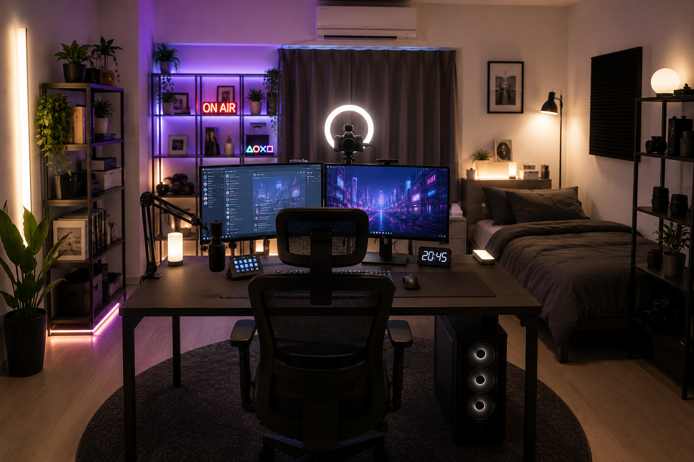
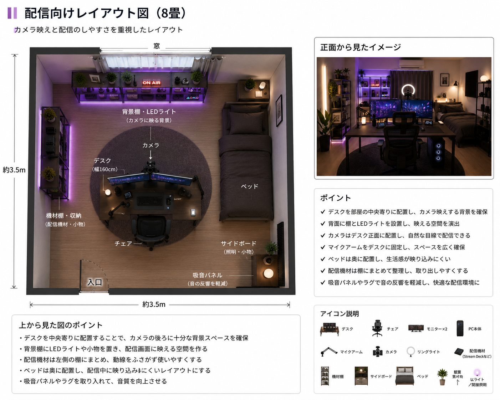

配信向けレイアウト

概要
ゲーム配信や雑談配信、動画撮影を想定したレイアウトです。デスクを部屋の中央寄りに配置し、背面が映えるように収納棚や間接照明を設置しています。カメラやマイク、照明機材を配置しても動きやすい導線を確保しているため、長時間の配信でも快適に使用できます。
基本情報
| 部屋サイズ | 8畳 |
|---|---|
| 用途 | ゲーム配信・雑談配信・動画撮影 |
| 予算 | 約220,000円～350,000円（PC本体除く） |
| デスクサイズ | 幅160cm × 奥行80cm |
| 再現難易度 | ★★★★☆ |
レイアウト図

必要なもの
- 幅160cmデスク
- オフィスチェア
- デスクトップPC
- マイク
- Webカメラ
おすすめポイント
- カメラ映えする背景を作りやすい
- マイク・照明を置いても広い
- 機材の増設がしやすい
初心者向けアドバイス
配信を始めるときは、すべての機材をそろえる必要はありません。まずはPC・マイク・Webカメラがあれば十分です。配信に慣れてきたら、リングライトやStream Deckなどの機材を追加していくことで、費用を抑えながら快適な配信環境を整えられます。